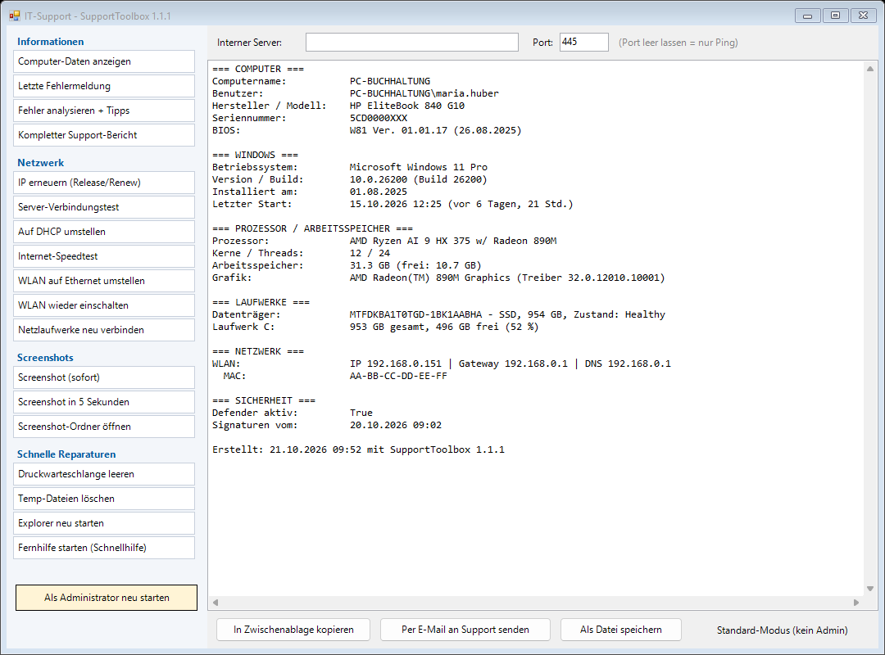

Ein kleines Support-Tool für Windows. Kunden führen die lästigen Standardaufgaben per Klick selbst aus – das Ergebnis geht mit einem weiteren Klick per Mail an den Support.
⬇ SupportToolbox.exe ZIP (Skript) Quellcode auf GitHub
Modell, Seriennummer, Windows-Version, CPU, RAM, Laufwerke, Netzwerk und Virenschutz – direkt als Mail verschickbar.
Zeigt den neuesten Fehler aus dem Windows-Ereignisprotokoll im Klartext.
Erkennt bekannte Fehlermuster der letzten 14 Tage und gibt Hilfe zur Selbsthilfe. Prüft zusätzlich Speicherplatz, Neustart-Bedarf und RAM.
ipconfig /release, /renew und DNS-Cache leeren in einem Schritt.
Testet interne Server: Router → lokaler DNS-Server → Namensauflösung → Ping → Port – mit verständlicher Diagnose, wo es hakt.
Feste IP, Gateway und DNS mit einem Klick auf automatisch zurücksetzen – alte Werte werden gesichert, der erhaltene DNS- und DHCP-Server wird angezeigt.
Download, Upload, Ping und Schwankung mit verständlicher Einordnung und Tipps.
Schaltet das WLAN ab, sobald ein Netzwerkkabel verbunden ist – und bei Bedarf wieder an.
Verbindet getrennte Laufwerke neu und prüft vorher, ob der Server erreichbar ist (VPN!).
Sofort oder mit 5 Sekunden Verzögerung – als Datei und in der Zwischenablage.
Druckwarteschlange leeren, Temp-Dateien löschen, Explorer neu starten, Windows-Schnellhilfe für die Fernwartung.
SupportToolbox.exe herunterladen und doppelklicken – keine Installation nötig. (Unsigniert: SmartScreen zeigt ggf. eine Warnung.)Mit einer config.json neben dem Skript legen Sie Ihre Support-Adresse, den Test-Server und Netzlaufwerke fest:
{
"CompanyName": "Mein IT-Support",
"SupportMail": "support@meine-firma.de",
"TestHost": "server.meine-firma.de",
"TestPort": 445
}